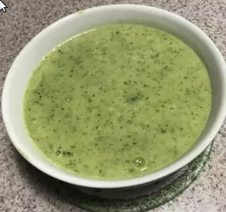

Easy Zucchini Soup

This is an easy one!
This creamy (but cream-free!) soup is a great addition to any meal. It's quick and easy, you will have your guests thinking that you have been cooking all day!
Ingredients
- ½ cup butter
- 2 pounds zucchini, cut into chunks
- 1 (15 ounce) can chicken broth
- 1 teaspoon salty
- 1 teaspoon curry powder
Directions
- Melt butter in a pot over medium heat. Add zucchini, chicken broth, salt, and curry powder to the pot; cook until the zucchini is soft, about 15 minu
- Pour soup into a blender no more than half full. Cover and hold lid in place; pulse a few times before leaving on to blend. Puree in batches until smooth.
Back to main page